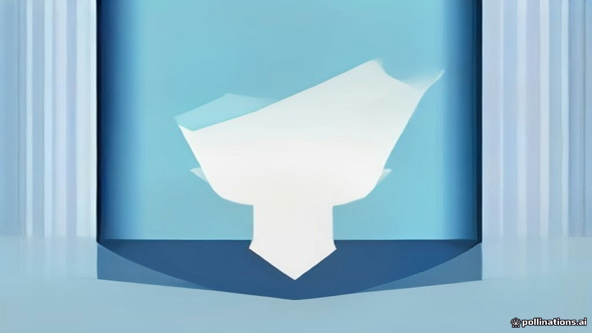

«Ram Altman доносит главе OpenAI о простаивающей памяти»
Выпущен открытый скрипт Ram Altman. Он собирает данные о простаивающей оперативной памяти на ПК пользователя и отправляет их главе OpenAI на электронную почту. Любой может запустить скрипт и тем самым сообщить руководству, сколько гигабайт ничего не делают. Код проекта в открытом доступе. Конфиденциальность теперь включает в себя и ваш неиспользуемый ОЗУ — он тоже знает только одного получателя. Скрипт работает тихо, как доносчик из старого фильма.
Источник: habr.com ↗